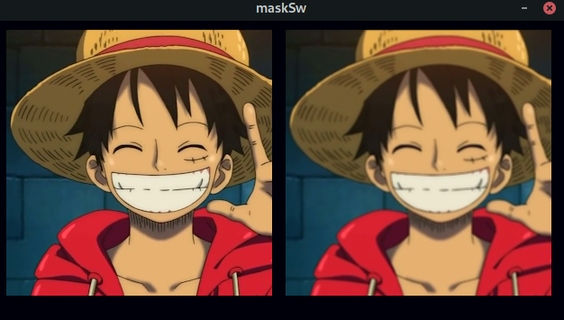

Mascaras de convolución
Se realizó la aplicación de 3 mascaras de convolución,recorriendo la imagen pixel a pixel y aplicando a cada uno la matriz de convolución respectiva, esto con el fin de lograr el filtro o mascara deseado donde los resultados fueron los siguientes:
- Detección de bordes (edgeDetect): Los bordes de una imagen digital se pueden definir como transiciones entre dos regiones de niveles de gris significativamente distintos. Suministran una valiosa información sobre las fronteras de los objetos y puede ser utilizada para segmentar la imagen, reconocer objetos.
- Box blur: Desenfoca una imagen basándose en el color promedio de sus píxeles circundantes. Con niveles de radio altos se obtiene un efecto "box". Con niveles de radio más bajos se obtiene un efecto similar al Desenfoque gaussiano. 
- Filtro Sharpen: ayuda a resaltar los detalles y mejorar los bordes de los objetos en una imagen.
- Filtro Gaussian blur kernel: